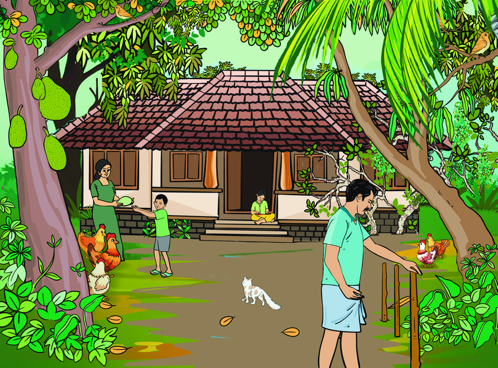
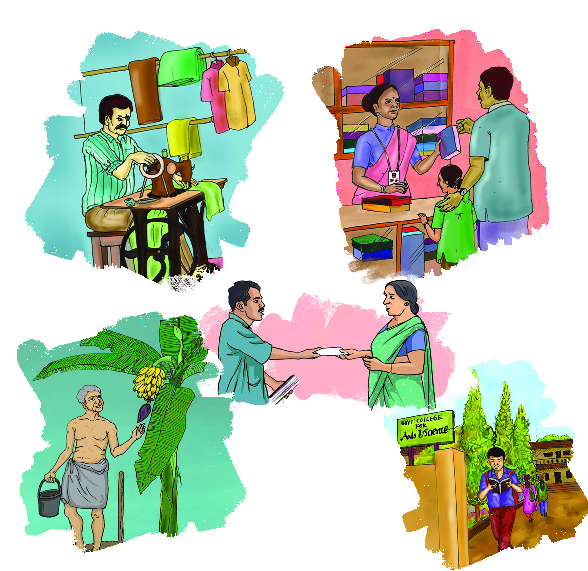
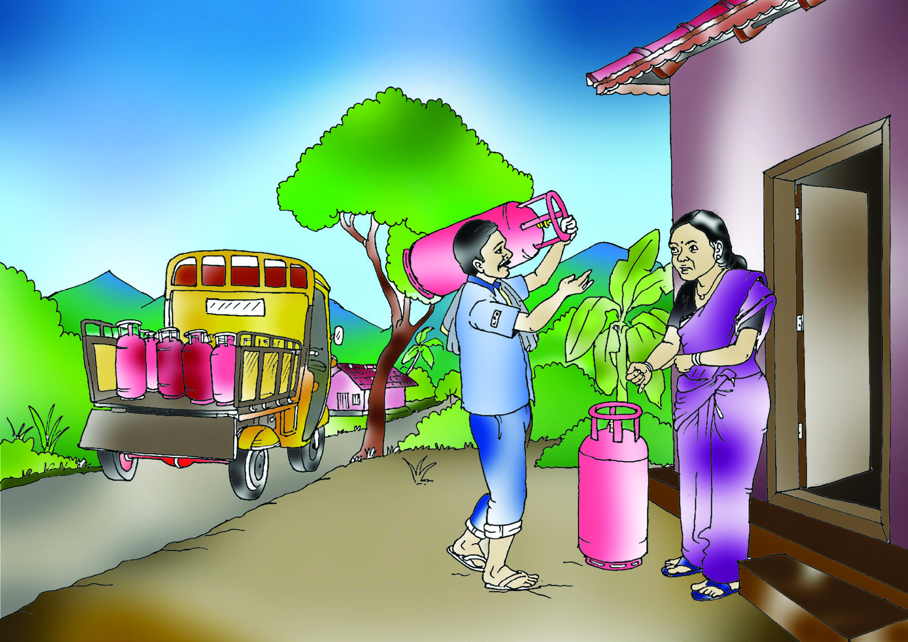
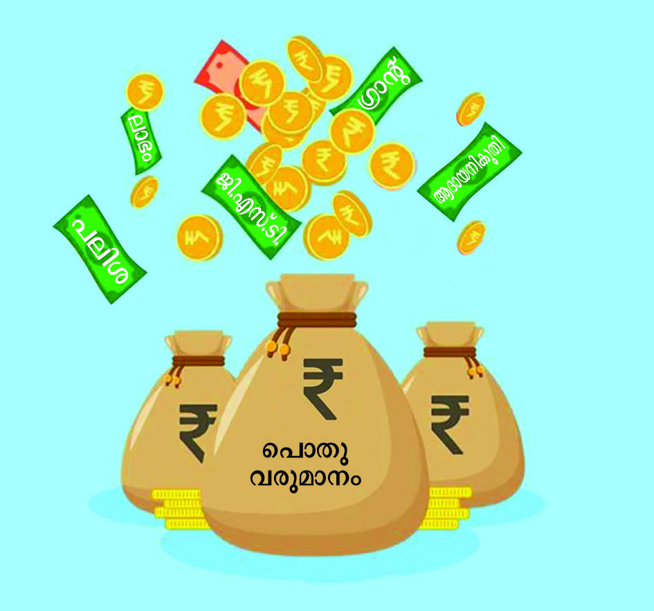
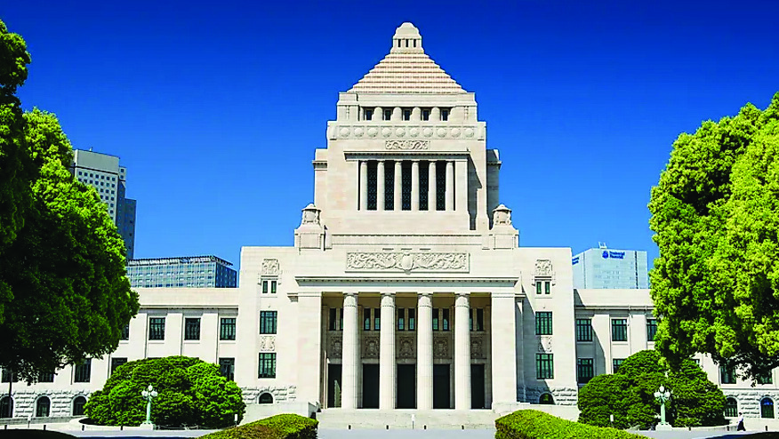

ബജറ്റ്് : വിികസനത്തിിന്റെź നേ�ർരേേഖ
10
ഈ കുുടും�ംബാംംഗങ്ങളുുടെെ സംംഭാാഷണംം ശ്രദ്ധിിച്ചല്ലോƽോ.
ചിിത്രംം 10.1
ചേxട്ടാാ, നാാളെ� അമ്മുുവിിന്റെെź
പിിറന്നാാളാണ്...
ഒരുു ഉടുുപ്പ്് വാങ്ങണ്ടേĬ?
അച്ഛന്റെെź മരുുന്നു തീീർന്നിട്ടുണ്ട്.
കറണ്ട് ബില്ലുംം� വന്നിട്ടുണ്ട്.
ചിട്ടിക്ക്് പണംം അടയ്ക്കാാനുമുണ്ട്
ഈ മാസത്തെെĹ ശമ്പളം
കിട്ടിയിിട്ടുണ്ട്. അച്ഛന്റെെź മരുുന്നിനുംം�
കറണ്ട് ബില്ലിനുമുള്ള പണംം ഞാാൻ
അമ്മയെ�
ഏല്പിിക്കാം. സുഹൃത്തിന്റെെź
കൈൈയിിൽ നിന്ന് കടംംം വാങ്ങിയ പണവുംം�
തിരിച്ചുകൊ�ൊടുുക്കണംം. അമ്മുുവിിന്
ഉടുുപ്പ്് ഞാാൻ വാങ്ങിക്കൊ�ൊള്ളാം.
ചിട്ടിയുംം� അടയ്ക്കാം
മോ�ോനേ�...
ഈ മാസവുംം� ചെെxലവ്
കൂടുുതലാാണല്ലോƽോ...
ഇനിയുംം� പണംം കടംംം
വാങ്ങേ�ണ്ടിവരുുമോ�ോ
?
ചിട്ടി കിട്ടിയാൽ
നമ്മുുടെെ കടങ്ങളെ�ല്ലാം�
വീട്ടാം�. ബാാക്കി പണംം
നമുുക്ക്് ബാാങ്കിിൽ
നിക്ഷേäപിിക്കാം
Page 40

Page 41

സംംഭാാഷണത്തിൽ പരാാമർശിക്കപ്പെ�ടുുന്ന ചെെxലവുകൾ ഏതെ�ല്ലാമാണ്?
l കടംംം വീട്ടൽ
l
l
l
എന്തൊŦൊക്കെ� ചെെxലവുകൾക്കാണ് നിത്യജീീവിിതത്തിൽ നാം പണംം വിിനിയോ�ോഗി
ിക്കുന്നത്്.
l ആഹാാരം
l ആരോ�ോഗ്യം�ം
l
l
l
l
കുടും�ംബചെെxലവ്
ഒരുു കുുടും�ംബംം ഭക്ഷ്യ ഉപഭോ�ോ
ഗ
ത്തിനുംം� (Food Consumption)
ഭക്ഷ്യേäേതര ഉപഭോ�ോ
ഗത്തിനുമായിി
(Non Food Consumption) ഒരുു
നിശ്ചിിത കാലയളവിിൽ ചെെxലവഴിി
ക്കുന്ന ആകെ� തുകയാാണ് കുുടും�ംബ
ചെെxലവ്. കുുടും�ംബത്തിലെ� എല്ലാ
ചെെxലവുകളും�ം നമുുക്ക്് മുൻകൂട്ടി
നിശ്ചയിിക്കാൻ കഴിിയിില്ല. അതു
കൊ�ൊണ്ട് കുുടും�ംബചെെxലവുകളെ�
ഇങ്ങനെ� തരംംതിരിക്കാം.
കുടും�ംബചെെxലവ്
പ്രതീീക്ഷിിത ചെെxലവ്
നിശ്ചിിത കാലയളവിിനുള്ളിൽ ഒരുു
കുുടും�ംബത്തിൽ ഉണ്ടാകുുമെെന്ന്് പ്രതീീക്ഷിക്കു
ന്ന ചെെxലവുകളാാണ് പ്രതീീക്ഷിത ചെെxലവ്.
പ്രതിമാസംം, പ്രതിവർഷം എന്നിങ്ങനെ� ഇത്
കണക്കാക്കാവുന്നതാാണ്.
ഉദാാഹരണംം: ആഹാാരം
വൈൈദ്യു�ുതി ബിൽ
തുുടങ്ങിയവ
അപ്രതീീക്ഷിിത ചെെxലവ്
നിശ്ചിിത കാലയളവിിനുള്ളിൽ ഒരുു
കുുടും�ംബത്തിന് മുൻകൂട്ടി നിശ്ചയിിക്കാൻ
കഴിിയാത്തതുംം� ആകസ്
്മികമാായിി ഉണ്ടാകുുന്നതുു
മായ ചെെxലവുകളാാണ് അപ്രതീീക്ഷിത ചെെxലവുകൾ.
ഉദാാഹരണംം: പ്രകൃതിക്ഷോോäോഭംം
രോ�ോഗങ്ങൾ
തുുടങ്ങിയവ
ചിിത്രംം 10.2
153
ബജറ്റ്് : വിികസനത്തിിന്റെź നേ�ർരേേഖ
Page 42


പ്രതീീക്ഷിത ചെെxലവിിനുംം�, അപ്രതീീക്ഷിത ചെെxലവിിനുംം� കൂടുുതൽ ഉദാാഹരണ
ങ്ങൾ എഴുതി പട്ടിക പൂർത്തീകരിിക്കുക?
പ്രതീീക്ഷിിത ചെെxലവ്
അപ്രതീീക്ഷിിത ചെെxലവ്
l വിിദ്യാ�ാഭ്യാ�ാസംം
l അപകടംം
ം
കുടും�ംബവരുുമാാനം
ചിിത്രംം 10.3
154
സാാമൂൂഹ്യയശാാസ്ത്രംം
- ഭാാഗംം 2
VII
Page 43

നിഖിിലിന്റെെź കുുടും�ംബാംംഗങ്ങൾ ഏർപ്പെ�ടുുന്ന വിിവിിധ പ്രവർത്തന മേ�ഖ
ലകളാാണ്
ചിത്രത്തിൽ. ഇതിൽ തൊ�ൊഴിിലുകളിിൽ ഏർപ്പെ�ടുുന്നവരും�ം അല്ലാത്തവരുുമുണ്ട്. അവർ ആരൊ�ൊ
ക്കെ�യെ�ന്ന്് നോ�ോക്കാംം.
കുടും�ംബാംഗങ്ങൾ
പ്രവർത്തനമേ�ഖല/
വരുുമാാനസ്രോǟോതസ്സ്്
വരുുമാാനം
ഉണ്ട്്/ഇല്ല
നിഖിിൽ
വിിദ്യാ�ാർഥിി
അച്ഛൻ
തയ്യൽ
അമ്മ
സെ�യിിൽസ് വുമൺ
മുത്തച്ഛൻ
കൃഷി
മുത്തശ്ശിി
പെ�ൻഷൻ
ഒരുു നിശ്ചിിത കാലയളവിിൽ ഒരുു കുുടും�ംബത്തിന് വിിവിിധ സ്രോǟാതസ്സുുകളിിൽ നിന്ന് ലഭിക്കുന്ന
ആകെ� വരുുമാനമാാണ് കുുടും�ംബവരുുമാനം. വരുുമാനം കാര്യക്ഷമമായിി വിിനിയോ�ോഗി
ിക്കുന്ന
തിലൂടെെ സമ്പാദ്യശീലം വളർത്തുന്നതിിനുംം� അപ്രതീീക്ഷിതചെെxലവുകൾ നേ�രിിടുുന്നതിിനുംം�
ജീീവിിതനിിലവാരം ഉയർത്തുന്നതിിനുംം� കഴിിയുംം�.
എന്തൊŦൊക്കെ� വരുുമാനമാാർഗങ്ങളാണ് നിങ്ങളുുടെെ കുുടും�ംബത്തിനുള്ളത്?
കുടും�ംബ ബജറ്റ്്
നിശ്ചിിത കാലയളവിിലേ�ക്കുള്ള ഒരുു കുുടും�ംബത്തിന്റെെź പ്രതീീക്ഷിത വരവുംം� ചെെxലവുംം� ഉൾപ്പെ�
ടുുത്തി തയ്യാറാക്കുന്ന ധനരേ�ഖയാ
ാണ് കുുടും�ംബ ബജറ്റ്്. പ്രതിമാസത്തിലേ�ക്കോ�ോ
പ്രതിവർഷ
ത്തിലേ�ക്കോ�ോ
തയ്യാറാക്കാവുന്ന കുുടും�ംബ ബജറ്റ്് കുുടും�ംബത്തിന്റെെź വലിിപ്പവുംം� വരുുമാനവുംം�
ആവശ്യങ്ങളും�ം അനുസരിിച്ച് വ്യത്യാാ�സപ്പെ�ട്ടിരിക്കുംം�. കുുടും�ംബത്തിലെ� എല്ലാ അംഗങ്ങളുുടെെയുംം�
അഭിപ്രായങ്ങൾ പരിിഗണിച്ചുകൊ�ൊണ്ടുവേ�ണംം കുുടും�ംബ ബജറ്റ്് തയ്യാറാക്കേ�ണ്ടത്്. കൃത്യമായ
ഇടവേ�ളകളി
ിൽ ബജറ്റിിലെ� നിർദേ�ശങ്ങൾ പാലിക്കപ്പെ�ടുുന്നുവെ�ന്ന്് ഉറപ്പുവരുുത്തുന്നതിിലൂടെെ
കുുടുുബത്തിന് സാമ്പത്തികഭദ്രതയുംം� ക്ഷേäമവുംം� കൈൈവരിിക്കാൻ കഴിിയുംം�.
155
ബജറ്റ്് : വിികസനത്തിിന്റെź നേ�ർരേേഖ
Page 44

സംംഭാാഷണംം ശ്രദ്ധിിക്കാം.
സ്റ്റോോǢോക്ക്് എത്താൻ
വൈൈകിി. വിിലയിിലുംം�
ചെെxറിയ വർധനവുുണ്ട്.
ബുക്ക്് ചെെxയ്തിിട്ട്
ഒരാഴ്ചയാായല്ലോƽോ?
എനിക്ക്്
എന്തുചെെxയ്യാൻ
കഴിിയുംം�?
ഇങ്ങനെ� വിില
വർധിപ്പിച്ചാൽ
എന്തുചെെxയ്യുംം�. ഇവിിടെെ
ജീീവിിതത്തിന്റെെź രണ്ടറ്റവുംം�
കൂട്ടിമുട്ടിക്കാനുള്ള
പെ�ടാാപ്പാട് ഞങ്ങൾക്കല്ലേƽ
അറിയൂ.
അപ്രതീീക്ഷിത വിിലവർധനവ്് എങ്ങനെ�യാാണ് കുുടും�ംബ ബജറ്റിിനെ� ബാാധിക്കുന്നതെ�ന്ന്
്
മുകളിിൽ നൽകിയിിട്ടുള്ള സംംഭാാഷണത്തിൽ നിന്ന് തിരിച്ചറിഞ്ഞല്ലോƽോ.
ഇതുപോ�ോലെ�
നിങ്ങളുുടെെ കുുടും�ംബ ബജറ്റിിനെ� സ്വാ�ധീനിക്കുന്ന മറ്റെെന്തെെŦല്ലാം� ഘടകങ്ങളുു
ടെĬന്ന് കണ്ടെടെĬത്തൂ.
l വൈൈദ്യു�ുതി നിരക്ക്് വർധനവ്്
l
l
l
വരവ്്, ചെെxലവിിനേ�ക്കാാൾ കൂടുുതലാാകുുകയോ�ോ
, വരവുംം� ചെെxലവുംം� തുല്യമാവുകയോ�ാ ചെെxയ്യു
മ്പോ�ോഴാാണ് കുുടും�ംബബജ
റ്റ്് സുസ്ഥിിരമാാകുുന്നത്്.
കുടും�ംബചെെxലവ് എങ്ങനെ�യൊ
ൊക്കെെÚ കുറയ്ക്കാംം
l
പ്രാദേ�ശിികമാായിി ലഭിക്കുന്ന വിിഭവങ്ങൾ ഭക്ഷണത്തിനാായിി ഉപയോ�ാഗിക്കുക.
l
ഭക്ഷ്യവസ്തുുക്കൾ സ്വവന്തമായിി കൃഷി ചെെxയ്യുക.
l
പൊ�ൊതുുവിിതരണ
സംംവിിധാനവുംം� ന്യാാ�യവിില വിില്പന കേ�ന്ദ്രങ്ങളും�ം പരമാാവധിി പ്രയോ�ോജന
പ്പെ�ടുുത്തുക.
l
l
ചിിത്രംം 10.4
156
സാാമൂൂഹ്യയശാാസ്ത്രംം
- ഭാാഗംം 2
VII
Page 45


ഒരുു കുുടും�ംബത്തിന്റെെź ഒരുു മാസത്തെെĹ ബജറ്റിിന്റെെź മാതൃകയാാണ് ചുവടെെ നൽകിയിിരിക്കുന്നത്്.
നം
വരവ്്
തുക
നം
ചെെxലവ്
തുക
1
കൂലി
9500
1
അരി, പലവ്യഞ്ജനം
5000
2
ശമ്പളം
10000
2
പാൽ, പച്ചക്കറിി
1200
3
പെ�ൻഷൻ
3200
3
മൽസ്യംം�, മാം�സംം
2000
4
കൃഷി
2100
4
വൈൈദ്യു�ുതി
1100
5
വസ്ത്രംം
1500
6
ചികിത്സ
1000
7
വിിദ്യാ�ാഭ്യാ�ാസംം
1500
8
വിിനോ�ാദം
500
9
യാത്ര
2300
10
വായ്പതിരിച്ചടവ്്
5000
11
ഫോാൺ, പത്രം, ഗ്യാ�ാസ്
1500
12
കൃഷി
1000
13
മറ്റ്് ചെെxലവുകൾ
2100
ആകെ�
24,800
ആകെ�
25,700
കമ്മി
900
l
ഈ കുുടും�ംബ ബജറ്റിിന്റെെź പ്രത്യേ�േകതയെ�ന്ത്
്?
l
ഈ കുുടും�ംബ ബജറ്റിിനെ� ഒരുു മിച്ചബജറ്റാാക്കിമാറ്റുവാൻ എന്തൊŦൊക്കെ� നിർദേ�ശങ്ങൾ
നിങ്ങൾക്ക്് നൽകാൻ കഴിിയുംം�?
കുുടും�ംബ ബജറ്റ്് കൊ�ാണ്ടുള്ള നേ�ട്ടങ്ങൾ എന്തെെŦല്ലാം�? കൂടുുതൽ കണ്ടെടെĬത്തി പട്ടിക വിിപു
ലീകരിിക്കുക.
വിിവിിധ വരുുമാാനസ്രോǟോതസ്സുുകൾ
തിരിച്ചറിയുന്നുു
വരവിിനനുസരിച്ച് ചെെxലവ്
ക്രമീകരിക്കുന്നുു
മിതവ്യയശീീലം
157
ബജറ്റ്് : വിികസനത്തിിന്റെź നേ�ർരേേഖ
Page 46


പൊാതുചെെxലവ്
ദേ�ശീീയപാാത വിികസനംം
യാഥാർഥ്യത്തിലേ�ക്ക്്
ഗെ�യിിൽ പൈൈപ്പ്് ലൈൈൻ
പൂർത്തീകരിിച്ചു
ജൽജീീവൻ മിഷൻ പദ്ധതിി :
കുുടിനീർക്ഷാമം തീീർക്കാൻ ഫണ്ട്
സാമൂഹികസു
ുരക്ഷാ പെ�ൻഷൻ
വിിതരണംം ചെെxയ്തു
സർക്കാർ നടപ്പിിലാക്കുന്ന വിിവിിധ ക്ഷേäമ-വിികസന
പ്രവർത്തനങ്ങളുുടെെ വാർത്താതലക്കെ�
ട്ടുകളാാണ് മുകളിിൽ നൽകിയിിരിക്കുന്നത്്.
സർക്കാരിന് ഈ പ്രവർത്തനങ്ങൾ നിർവഹി
ിക്കുന്നതിിന് ധാരാളം പണംം ആവശ്യമായിി വരുു
ന്നു. ഇവ കൂടാതെ� മറ്റെെന്തെെŦല്ലാം� പ്രവർത്തനങ്ങൾക്കാണ് സർക്കാർ ധനം ചെെxലവഴിിക്കുന്നത്്.
l ശമ്പളം
l ആശുപത്രി നിർമ്മാണ പ്രവർത്തനങ്ങൾ
l പലിിശ
l സാമൂഹികസു
ുരക്ഷാപദ്ധതിികൾ
l പ്രതിരോ�ോ
ധചെെxലവുകൾ
l
സർക്കാർ ധനം ഉപയോ�ാഗിച്ച് നിങ്ങളുുടെെ നാാട്ടിൽ നടന്ന
ക്ഷേäമ-വിികസന
പ്രവർത്തനങ്ങൾ എന്തെെŦല്ലാമാണെ�ന്ന്് ചർച്ച ചെെxയ്ത് കുുറിപ്പ്് തയ്യാറാക്കുക.
വിികസന
-വിികസനേ�തര
പ്രവർത്തനങ്ങൾക്കായിി സർക്കാർ ചെെxലവഴിിക്കുന്ന ധനമാാണ്
പൊ�ൊതുുചെെxലവുകൾ. സർക്കാരിന്റെെź പ്രവർത്തനങ്ങൾ വിിപുലമാകുുന്നതിിനനുുസരിിച്ച്
പൊ�ൊതുുചെെxലവുകളും�ം വർധിക്കുംം�.
ചിിത്രങ്ങൾ 10.5
158
സാാമൂൂഹ്യയശാാസ്ത്രംം
- ഭാാഗംം 2
VII
Page 47

പൊ�ൊതുുചെെxലവുകളെ� രണ്ടായിി തരംംതിരിക്കാം.
വിികസന ചെെxലവുകൾ (Developmental Expenditure)
രാജ്യത്തിന്റെെź സാമ്പത്തികവുംം�, സാമൂഹികവുുമായ വിികസനവു
ുമായിി നേ�രിിട്ട് ബന്ധപ്പെ�
ട്ടിരിക്കുന്ന ചെെxലവുകളെ� വിികസന
ചെെxലവുകൾ എന്ന് വിിളിക്കുന്നു. ഇവ രാജ്യത്തിന്റെെź
ഉൽപാദനത്തെെĹയുംം� യഥാാർഥ സമ്പത്ത് വ്യവസ്ഥയെ�യുംം� ഉത്തേĹജിപ്പിച്ച് സാമ്പത്തികവ
ളർച്ചയ്ക്ക് വലിിയസംംഭാാവന നൽകുുന്നതിിനാാൽ ഇവ ഉൽപാദന ചെെxലവുകൾ എന്നുംം� അറി
യപ്പെ�ടുുന്നു. റോ�ോ
ഡ്്, പാലം, തുറമുഖം എന്നിവ നിർമ്മിക്കുക, പുതിയ സംംരംഭങ്ങളും�ം
വിിദ്യാ�ാഭ്യാ�ാസ സ്ഥാപനങ്ങളും�ം ആരംഭിക്കുക തുടങ്ങിയ പ്രവർത്തനങ്ങൾക്കുള്ള സർക്കാർ
ചെെxലവുകളാാണ് വിികസനചെെ
xലവുകളാായിി കണക്കാക്കുന്നത്്.
വിികസനേ�തര ചെെxലവുകൾ (Non-Developmental Expenditure)
രാജ്യതാൽപര്യത്തിനുംം� പൊ�ൊതുുസേ�വന
ങ്ങൾക്കുമായിി സർക്കാർ നിരന്തരം വഹി
ിക്കുന്ന
ചെെxലവുകളാാണ് വിികസനേ�തര
ചെെxലവുകൾ. പ്രതിരോ�ോധം
ം, പലിിശ, പെ�ൻഷൻ, മഹാാമാരി,
പ്രകൃതിദുരന്തം തുടങ്ങിയവയ്ക്കുള്ള ചെെxലവുകൾ ഇതിൽപ്പെ�ടുുന്നു.
ചുവടെെ നൽകിയിിരിക്കുന്ന ചെെxലവുകളെ� വിികസന
ചെെxലവുകൾ, വിികസ
നേ�തര
ചെെxലവുകൾ എന്നിങ്ങനെ� തരംംതിരിച്ച് പട്ടികപ്പെ�ടുുത്തുക.
l പലിിശ
l റോ�ാഡ്് നിർമ്മാണംം
l ഊർജോ�ോല്പാാദനംം
l വിിദ്യാ�ാലയ നിർമ്മാണംം
l മഹാാമാരി
l യുദ്ധം
l ക്ഷേäമ പെ�ൻഷൻ
l പ്രതിരോ�ാധം
l കടബാ
ാധ്യത
l പൊ�ൊതുുഭരണംം
l സബ്
്സിഡികൾ
l വ്യവസാ
ായശാാലകൾ
വിികസനചെെxലവുകൾ
വിികസനേ�തര ചെെxലവുകൾ
159
ബജറ്റ്് : വിികസനത്തിിന്റെź നേ�ർരേേഖ
Page 48


2018-19 മുതൽ 2022-23 വരെെയു
ുളള അഞ്ച്് വർഷത്തെ� കേ�ന്ദ്രസർക്കാരിന്റെź പൊൊതുു
ചെെxലവുകളാണ്് ചുവടെെ നൽകിയിരിക്കുന്നത്്.
വർഷം
പൊ�ൊതുുചെെxലവ് (ലക്ഷം കോ�ോടി
ിയിിൽ)
0
2018-19
Excerpts from Union Budget in 2023
23.14
2019-20
26.87
2020-21
35.09
2021-22
37.93
RE 2022-23
2018-19
2019-20
2020-21
2021-22
RE 2022-23
41.88
5
10
15
20
25
30
35
40
45
സർക്കാരിന്റെെź പൊ�ൊതുുചെെxലവുകളുുടെെ അടിസ്ഥാനത്തിൽ ഗ്രാാഫ് അപഗ്രഥിിച്ച്
നിഗമനങ്ങൾ രേ�ഖപ്പെ�ടുുത്തുക.
പൊൊതുുവരുുമാാനം
വിികസന
-ക്ഷേäമ പ്രവർത്തനങ്ങൾ നിർവ
ഹിക്കുന്നതിിന് സർക്കാരിന് ധാരാളം
പണംം ആവശ്യമായിി വരുുന്നു. ഇത്തരം
ആവശ്യങ്ങൾ
നിറവേ�റ്റുുന്നതി
ിനാായിി
വിിവിിധ
സ്രോǟാതസ്സുുകളിിൽ
നിന്ന്
സർക്കാർ സമാാഹരിിക്കുന്ന ധനമാാണ്
പൊ�ാതുവരുുമാനം. ഇത് സർക്കാർ ബജറ്റിിന്റെെź
ഒരുു പ്രധാന ഘടകമാ
ാണ്. സർക്കാരിന്റെെź
വരുുമാനമാാർഗങ്ങൾ ഏതൊ�ൊക്കെ�യാാണെ�ന്ന്്
ആലോ�ോചി
ിച്ച് നോ�ോക്കൂൂ. പ്രധാനമാായുംം� രണ്ട്
സ്രോോǟോതസ്സുുകളിിൽ നിന്നാാണ് സർക്കാർ
വരുുമാനം കണ്ടെടെĬത്തുന്നത്
് ചുവടെെ
നൽകിയിിരിക്കുന്ന ചാർട്ട് ശ്രദ്ധിിക്കൂ.
ചിിത്രംം 10.6
ചിിത്രംം 10.7
160
സാാമൂൂഹ്യയശാാസ്ത്രംം
- ഭാാഗംം 2
VII
Page 49
പ്രത്യക്ഷ നികുതി
നികുുതി ആരിലാണോ�
ാ
ചുമത്തിയിിരിക്കുന്നത്്, ആ
വ്യക്തിി തന്നെ� ഒടുുക്കുന്ന
നികുുതിയാണ് പ്രത്യക്ഷ
നികുുതി. അതായത്് നികുുതി
ദാായകൻ തന്നെ� നികുുതി
ഭാാരം വഹി
ിക്കുന്നു
എന്നർഥം. ആദാായ നികുുതി,
കെ�ട്ടിിട നികുുതി എന്നിവ
ഉദാാഹരണ
ങ്ങളാണ്.
പരോാക്ഷ നികുതി
ഒരാളുുടെെ മേ�ൽ
ചുമത്തപ്പെ�ടുുന്ന
നികുുതി ഭാാഗികമാായോ�ാ,
പൂർണ്ണമായോ�ാ മറ്റൊ�ാരാൾ
നൽകേ�ണ്ടിി വരുുന്നു.
വിില്പനനി
ികുുതി,
വിിനോ�ാദ നികുുതി
എന്നിവ
ഉദാാഹരണ
ങ്ങളാണ്
പൊ�ാതുവരുുമാനം
നികുതിവരുുമാാനം
നികുുതിയിിലൂടെെ ലഭിക്കുന്ന വരുുമാനം
നികുുതിയിിലൂടെെ അല്ലാതെ� മറ്റ്്
സ്രോോǟോതസ്സുുകളിിൽ നിന്ന് ലഭിക്കുന്ന
വരുുമാനം. ഉദാഃ�ഃ ഫീസ്, പിിഴ,
ഗ്രാാന്റ്, ലാഭം, പലിിശ.
നികുതിയേേതരവരുുമാാനം
നികുതി
ക്ഷേäമപ്രവർത്തനങ്ങൾ, വിികസന
പ്രവർത്തനങ്ങൾ എന്നിങ്ങനെ� പൊ�ൊതുുതാല്പര്യയത്തി
നുവേ�ണ്ടിിയുള്ള ചെെxലവുകൾ വഹി
ിക്കാനാായിി ജനങ്ങൾ സർക്കാരിന് നിർബന്ധമായുംം�
നൽകേ�ണ്ട
പണമാാണ് നികുുതി. നികുുതി നൽകുുന്ന വ്യക്തിിയെ� നികുുതിദാായകനെ�ന്ന്
്
വിിളിക്കുന്നു.
പ്രത്യക്ഷ നികുുതി, പരോ�ോക്ഷ
നികുുതി എന്നിവയ്ക്ക് കൂടുുതൽ ഉദാാഹരണ
ങ്ങൾ
കണ്ടെടെĬത്തി പട്ടികപ്പെ�ടുുത്തുക.
ചരക്ക് സേ�വന നികുതി (Goods and Services Tax-GST)
രാജ്യത്ത് ഒറ്റ നികുുതി എന്ന തത്വംം� നടപ്പിിലാക്കുന്നതിിന് ഭരണ
ഘടനയിിലെ� 101-ാം�
ഭേ�ദ
ഗതി പ്രകാരം 2017 ജൂലൈൈ 1 മുതൽ നിലവിിൽവന്ന ഏകീകൃത പരോ�ാക്ഷ നികുുതി
സമ്പ്രദാായമാാണ് ചരക്ക്് സേ�വന
നികുുതി (GST). ഒരുു സാമ്പത്തികവർഷം വിിറ്റുവരവ്്
സർക്കാർ നിശ്ചയിിക്കുന്ന തുകയിിൽ കൂടുുതലാാണെ�ങ്കിിൽ വ്യാാ�പാരികൾ നിർബന്ധമായുംം�
ജി.എസ്.ടി. രജിിസ്ട്രേğഷൻ എടുുക്കേ�ണ്ടതാാണ്. നിലവിിൽ 0%, 5%, 12%, 18%, 28% എന്നി
ങ്ങനെ�യുുള്ള നിരക്കുകളിിലാണ് ഉപഭോ�ോക്താ
ാവ് ജി.എസ്.ടി. നൽകേ�ണ്ടത്്. ഇത്തരത്തിൽ
ഉപഭോ�ോക്താ
ാക്കളിിൽ നിന്ന് ഈടാക്കുന്ന വിിവിിധ നിരക്കിലുള്ള നികുുതികൾ വ്യാാ�പാരികൾ
സർക്കാരിലേ�ക്ക്് അടയ്ക്കേ�ണ്ടതാ
ാണ്. കാലാനുസൃതമാായിി ജി.എസ്.ടി. നിരക്കിൽ മാറ്റം വരാാ
വുന്നതാാണ്.
161
ബജറ്റ്് : വിികസനത്തിിന്റെź നേ�ർരേേഖ
Page 50


ഇന്ന്് കേsന്ദ്ര ബജറ്റ്് :
ഇന്ന്് കേsന്ദ്ര ബജറ്റ്് :
പ്രതീീക്ഷയോോടെെ
പ്രതീീക്ഷയോോടെെ
സംംസ്ഥാാനങ്ങൾ
സംംസ്ഥാാനങ്ങൾ
സംംസ്ഥാാന ബജറ്റ്് :
സംംസ്ഥാാന ബജറ്റ്് :
അവതരണംം ഇന്ന്്
അവതരണംം ഇന്ന്്
നിയമസഭയിൽ
നിയമസഭയിൽ
വാർത്താതലക്കെ�ട്ട്് ശ്രദ്ധിിച്ചല്ലോƽോ. കേ�ന്ദ്ര ഗവൺമെെന്റുംം� സംംസ്ഥാന ഗവൺമെെന്റുകളും�ം ബജറ്റ്്
തയ്യാറാക്കാറുണ്ട്.
ബജറ്റ്് (Budget)
ഒരുു സാമ്പത്തികവർഷത്തിൽ സർക്കാർ പ്രതീീക്ഷിക്കുന്ന
ചെെxലവുംം� വരവുംം� ഉൾക്കൊ�ാള്ളിച്ചുകൊ�ൊണ്ട് തയ്യാറാക്കുന്ന
ധനരേ�ഖയാ
ാണ് ബജറ്റ്്. നമ്മുുടെെ രാജ്യത്ത് ഏപ്രിൽ 1 മുതൽ
മാർച്ച് 31 വരെെയുുള്ള ഒരുു സാമ്പത്തിക വർഷത്തേĹക്കാണ്
ബജറ്റ്് തയ്യാറാക്കുന്നത്്. ധനകാാര്യമന്ത്രിിയാണ് ബജറ്റ്് അവ
തരിിപ്പിക്കുന്നത്്. ഇന്ത്യൻ ഭരണ
ഘടനയു
ുടെെ ആർട്ടിക്കിൾ
112 അനുസരിിച്ച് രാജ്യത്തിന്റെെź വാർഷിക സാമ്പത്തിക ഓഡിറ്റ്് കൂടിയാണ് കേ�ന്ദ്ര ബജറ്റ്്.
ബജറ്റ്് പലതരംം
വരവുുചെെxലവുകളുുടെെ അടിസ്ഥാനത്തിൽ ബജറ്റുുകളെ� മൂന്നാായിി തിരിക്കാം.
ബജറ്റ്്
സന്തുലിത ബജറ്റ്്
(Balanced Budget)
കമ്മി ബജറ്റ്്
(Deficit Budget)
മിച്ച ബജറ്റ്്
(Surplus Budget)
വരവ്് കൂടുുതൽ
ചെെxലവ് കുുറവ്
വരവുംം� ചെെxലവുംം�
തുല്യം�ം
വരവ്് കുുറവ്
ചെെxലവ് കൂടുുതൽ
ചിിത്രംം 10.8
162
സാാമൂൂഹ്യയശാാസ്ത്രംം
- ഭാാഗംം 2
VII
Page 51
ബജറ്റിന്റെź ഉദ്്ഭവം
‘ബോ�
ാഗറ്റ്്’ എന്ന ഫ്രഞ്ച്് വാക്കിൽ നിന്നാാണ് ബജറ്റ്് എന്ന വാക്കിന്റെെź ഉദ്ഭവംം.
ചെെxറിയ ബാാഗ് അല്ലെെƽങ്കിിൽ സഞ്ചി എന്നാാണ് ഇതിന്റെെź അർഥം. സർക്കാരിന്റെെź
ധനകാാര്യ രേ�ഖക
ൾ അടങ്ങുന്ന ഒരുു സഞ്ചി എന്ന അർഥത്തിലാണ് ബജറ്റ്്
എന്ന പദംം രൂപംകൊ�ാണ്ടത്. 11-ാം� നൂറ്റാണ്ടിലാണ് ബജറ്റിിന്റെെź ആദ്യ അവതര
ണംം നടന്നത്്. സ്വവതന്ത്ര ഇന്ത്യയിിലെ� ആദ്യത്തെെĹ കേ�ന്ദ്രബജറ്റ്് അവതരിിപ്പിച്ചത്
ധനകാാര്യമന്ത്രിിയായിിരുുന്ന ആർ.കെ�. ഷൺമുഖം ചെെxട്ടി ആണ്.
പൊൊതുുകടംം (Public Debt)
വിികസന
-ക്ഷേäമ പ്രവർത്തനങ്ങൾ യാഥാർഥ്യമാക്കുവാനുംം�, ഭരണപരമാ
ായ വിിവിിധ ആവശ്യ
ങ്ങൾ നിറവേ�റ്റുുവാനുംം� വരുുമാനം തികയാാതെ� വരുുമ്പോ�ോൾ ഗവൺമെെന്റിന് കടമെെടു
ുക്കേ�ണ്ടിി
വരും�ം. ഇത്തരത്തിൽ സർക്കാർ വാങ്ങുന്ന വായ്പകളാാണ് പൊ�ൊതുുകടംംം. രാജ്യത്തിനകത്തുനി
ന്നുംം� പുറത്തുനിന്നുംം� വായ്പകൾ വാങ്ങാറുണ്ട്. ഇവ യഥാാക്രമം ആഭ്യന്തരകടംം, വിിദേ�ശകടംംം
എന്നിങ്ങനെ� അറിയപ്പെ�ടുുന്നു.
ആഭ്യന്തരകടംം : രാജ്യത്തിനകത്തുള്ള വ്യക്തിികളിിൽ നിന്നുംം� സ്ഥാപനങ്ങളിൽ നിന്നുംം�
സർക്കാർ വാങ്ങുന്ന വായ്പകളാാണ് ആഭ്യന്തരകടംം.
വ്യയക്തിികൾ
സർക്കാാർ സ്ഥാാപനങ്ങൾ
ചിിത്രങ്ങൾ 10.9
ചിിത്രംം 10.10
163
ബജറ്റ്് : വിികസനത്തിിന്റെź നേ�ർരേേഖ
Page 52

വിിദേ�ശകടംം : വിിദേ�ശ ഗവൺമെെന്റുകളിിൽ നിന്നുംം� അന്തർദ്ദേŔശീയ സ്ഥാപനങ്ങളിൽ നിന്നുംം�
വാങ്ങുന്ന വായ്പകളാാണ് വിിദേ�ശകടംംം.
ചിിത്രംം 10.11
വിദേശ ഗവൺമെെന്റുുകൾ
അന്തർദേശീയ സ്ഥാാപനങ്ങൾ
ഇത്തരം വായ്പകളുുടെെ ഉൽപാദനക്ഷ
മമായ ഉപയോ�ോഗം
ം വിികസന
-ക്ഷേäമപ്രവർത്തനങ്ങൾ
യാഥാർഥ്യമാക്കുന്നതിിനുംം� അതുവഴിി വരുുമാന വർധനവിിനുംം� പൊ�ൊതുുകടംംം കുുറയ്ക്കുന്നതിിനുംം�
സഹാായകമാാകുുന്നു.
ധനനയം (Fiscal Policy)
പൊ�ൊതുുവരുുമാനം, പൊ�ൊതുുചെെxലവ്, പൊ�ൊതുുകടംംം എന്നിവയെ� സംംബന്ധിച്ച സമഗ്രമാായ
സർക്കാർ നയമാാണ് ധനനയംം. ധനകാാര്യവകുുപ്പ്് തയ്യാറാക്കുന്ന ഈ നയംം നടപ്പിിലാ
ക്കുന്നത്് ബജറ്റിിലൂടെെയാാണ്. നിലവിിലെ� സാമ്പത്തികസ്ഥിിതി മെെച്ചപ്പെ�ടുുത്തുന്നതിിനുംം�
സാമ്പത്തികസ്ഥിിരത കൈൈവരിിക്കുന്നതിിനുംം� ഗവൺമെെന്റിന് മാർഗനിർദേ�ശംം നൽകുുന്ന ഒരുു
നയംം കൂടിയാണിത്.
ധനനയത്തിിന്റെź ലക്ഷ്യങ്ങൾ
സാമ്പത്തിക വളർച്ച
ത്വവരിതപ്പെ�ടുുത്തുക
തൊ�ൊഴിിൽ അവസര
ങ്ങൾ
സൃഷ്ടിിക്കുക
അധിക ചെെxലവുകൾ
നിയന്ത്രിിക്കുക
വരുുമാന വിിതരണത്തി
ിലെ�
അസമത്വംം� ഇല്ലാതാക്കുക
പ്രതീീക്ഷിത വരവുംം� ചെെxലവുംം� മുന്നിൽ കണ്ടുകൊ�ൊണ്ട് കുുടും�ംബംം, ട്രസ്റ്റുകൾ, വ്യക്തിികൾ,
164
സാാമൂൂഹ്യയശാാസ്ത്രംം
- ഭാാഗംം 2
VII
Page 53

സംംഘടനക
ൾ, തദ്ദേŔശ സ്വവയംഭരണ
സ്ഥാപനങ്ങൾ, സംംസ്ഥാനം, രാജ്യം�ം എന്നിവ ബജറ്റ്്
തയ്യാറാക്കി പ്രവർത്തിക്കുന്നത്് വഴിി വിികസന
-ക്ഷേäമ കാര്യങ്ങൾ യാഥാർഥ്യമാക്കുന്നതിിനുംം�,
സുസ്ഥിിര വിികസനംം കൈൈവരിിക്കുന്നതിിനുംം� സഹാായകമാാകുുന്നു.
തുടർപ്രവർത്തനങ്ങൾ
l
വരവ്്-ചെെxലവ് കണക്കുകളെ�ക്കുറിച്ച് രക്ഷിതാക്കളോ�ോട്
് ചോോxോദിിച്ചറിഞ്ഞ് നിങ്ങളുുടെെ
കുുടും�ംബ ബജറ്റ്് തയ്യാറാക്കുക.
l
കേ�ന്ദ്ര-സംംസ്ഥാന സർക്കാരുുകൾ നടത്തു
ുന്ന വിികസന
-ക്ഷേäമ പ്രവർത്തനങ്ങൾ
ഉൾപ്പെ�ടുുന്ന പത്രവാർത്ത ശേ�ഖരിിച്ച് ഒരുു പതിിപ്പ്് തയ്യാറാക്കുക.
l
സാാധനങ്ങളും�ം സേ�വന
ങ്ങളും�ം സ്വീീ�കരിക്കുമ്പോ�ോൾ നാം നൽകുുന്ന ജി.എസ്.ടി. നിരക്കു
കളാാണ് ചുവടെെ നൽകിയിിരിക്കുന്നത്്. ഏതൊ�ൊക്കെ� സാധനങ്ങൾക്കുംം� സേ�വന
ങ്ങൾ
ക്കുമാണ് ഈ നികുുതി ചുമത്തുന്നതെ�ന്ന്
് കണ്ടെടെĬത്തി പട്ടിക പൂർത്തിയാക്കുക.
നികുതി
നിരക്കുകൾ
സാധനങ്ങൾ
സേ�വനങ്ങൾ
0%
5%
12%
18%
28%
l
കേ�ന്ദ്ര-സംംസ്ഥാന സർക്കാരുുകളെ�പ്പോ�ോലെ�
തദ്ദേŔശ സ്വവയംഭരണ
സ്ഥാപനങ്ങളും�ം വിിവിിധ
തരംം നികുുതികൾ ഈടാക്കുന്നുണ്ടല്ലോƽോ. അവ ഏതെ�ല്ലാമാണെ�ന്ന്് അന്വേ�േഷിിച്ചറിഞ്ഞ്
പട്ടികപ്പെ�ടുുത്തുക.
165
ബജറ്റ്് : വിികസനത്തിിന്റെź നേ�ർരേേഖ